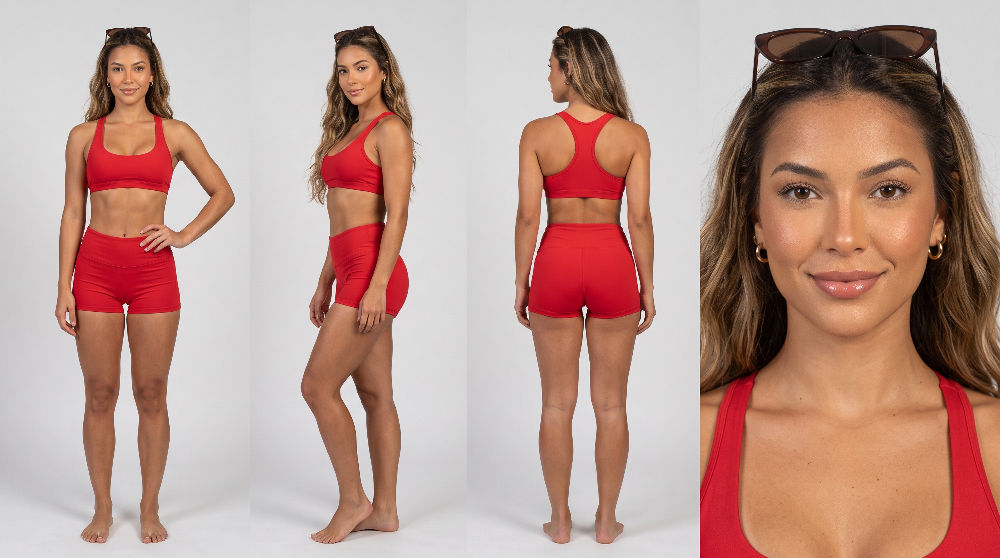
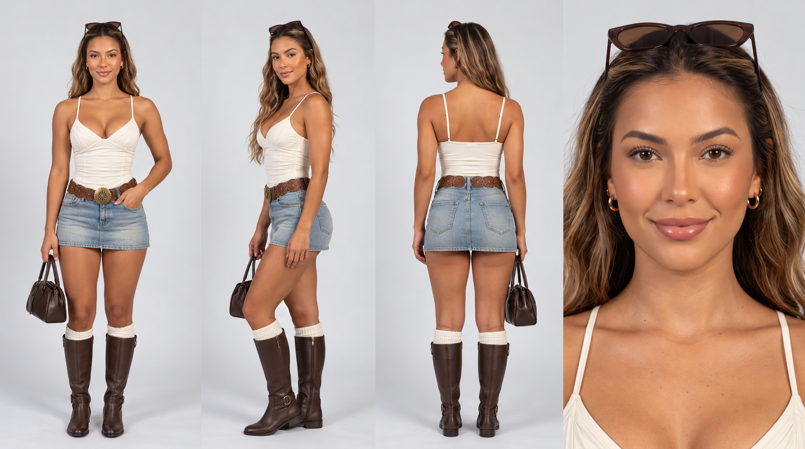

AI UGC · master pipeline · v1 · 2026-10-26
Master UGC pipeline
Codex locks the face, Nano Banana makes it look real, Omni makes it talk. Proven on Tiff Day 1: two ~20s talking vlogs and a carousel, every clip accepted on the first try. The text version agents read is masterUGC.md.
Per ~20s video
30 cr
2 × 10s Omni clips
Images
0 cr
Nano Banana Pro · Codex plan
Script accuracy
4 / 4
word for word, Day 1
Daily Flow top-up
+50 cr
Google AI Pro
The pipeline
01
Character sheet
Have it
never regenerate02
Outfit sheets
Codex CLI
plan usage · ~1–2 min03 0 cr · x2
0 cr · x2
Start frame
Nano Banana Pro0 cr · x204 15 cr / 10s · 720p
15 cr / 10s · 720p
Video clips
Omni 1.1 Flash15 cr / 10s · 720p05 free · local
free · local
QA + stitch
ffmpeg · Whisperfree · local06
Finish + post
CapCut / TikTokhook · sound · AI labelWhy this split
Codex · GPT Image
Locks the face
Closest match to the original Tiff in every outfit. Cleaner, more polished look. 941×1672.
Nano Banana Pro
Looks like a real phone
Messy rooms, mirror smudges, grain. Holds the face well only when given the original sheets. 768×1376 at 1K.
Omni 1.1 Flash
Makes it talk
Said every scripted line word for word and timed the actions as written. Generates the voice from a text description, so check by ear that it stays the same.
Step by step
02 · Outfit sheets Codex CLI
- Refs: the persona's original sheets in
refs/. - Same 4-panel layout: front, ¾, back, face close-up. Every garment named.
- Run several outfits in parallel; reroll anything whose face drifts (free).
bash campaigns/tiff/gen_image.sh outfits/outfit1.png outfits/o1.txt refs/tiff_sheet_white.jpg refs/tiff_sheet_red.jpg
03 · Start frame Nano Banana Pro · Flow
- Flow → Image → Nano Banana Pro, 9:16, x2 → 0 credits.
- References: both original sheets + the outfit sheet. They clear after every submit, so re-add them each time.
- Selfie still: mid-chest up, off-center, real clutter, "phone NOT visible". Mirror OOTD: "exactly one phone, face visible".
- Keep the more amateur of the 2.
04 · Video Omni · Frames · 15 cr
- Video → Frames → Start = frame · 9:16 · 720p · 10s. Confirm "15 credits".
- Same start frame for every clip of one video, so the jump cut looks like a real vlog cut.
- ≤ 25 words per 10s · one delivery word · one action at a named second · fixed voice line.
authentic UGC vlog clip, handheld front-camera selfie, vertical. continue exactly from the start frame: same woman, same [place], same outfit… she is already holding the phone at arm's length and talks straight to camera. delivery: [word]. she says exactly: "[script]". around second [N] she [action]. her voice: [fixed voice line]. one continuous shot. no text, no captions, no music. slight handheld drift, built-in phone mic sound.
05 · QA + stitch local · free
ffmpeg -i 1A.mp4 -vf "fps=1,scale=240:-1,tile=5x2" -frames:v 1 1A_grid.jpg python transcribe.py 1A.mp4 ffmpeg -i 1A.mp4 -af silencedetect=n=-35dB:d=0.4 -f null - bash stitch.sh final/post.mp4 clips/1A.mp4:9.0 clips/1B.mp4:full
- Reject: face drift · extra fingers / second phone · on-screen text · script mismatch · cut-off last word.
- Stitch trims dead air and normalizes to −14 LUFS (raw Omni ≈ −29 dB).
Pricing
| Item | Tool | Cost |
|---|---|---|
| Video · 720p · 10s | Omni 1.1 Flash | 15 cr |
| Video · 720p · 8s | Omni 1.1 Flash | 12 cr |
| Video · 360p · 8s (test render) | Omni 1.1 Flash | 6 cr |
| Images, any count | Nano Banana Pro / 2.1 / Lite | 0 cr |
| Outfit sheet / frame | Codex (GPT Image) | plan usage (~20k tokens) |
| One ~20s finished video | 2 × Omni 10s | 30 cr |
| Day 1 total | 2 videos + carousel | 60 cr |
Higgsfield models to test
Higgsfield account checked 2026-10-26: free plan, 0 credits. Fill in prices to compare cost per 20s video against Omni's 30 credits.
| Model | Start frame | Voice ref | Length | Why | Price / 10s 720p |
|---|---|---|---|---|---|
| Seedance 2.0 | ✅ | ✅ | 4–15s | Identity + audio reference to lock one voice | tbd |
| Seedance 2.0 Mini | ✅ | ✅ | 4–15s | Budget version | tbd |
| Seedance 2.5 | ✅ | ✅ | 4–30s | One 20s take, no stitch | tbd |
| Seedance 1.5 Pro | ✅ | — | 4/8/12s | Cheaper baseline | tbd |
| Wan 2.6 | refs | ✅ | 5/10/15s | Open-weight, stylized | tbd |
| Kling 3.0 | ✅ | — | 3–15s | Strong motion | tbd |
| Grok Video 1.5 | ✅ | ✅ | 2–15s | Audio reference | tbd |
| MiniMax H3 Max | ✅ | ✅ | 5–15s | Fast, audio reference | tbd |
Rules
AI-generated label on every post · no first-person product claims · no AI before/after · only confirmed prices · "For the Boys" stays playful, not suggestive.
Check "Generating will use N credits" before every submit; settings carry over between modes.
masterUGC.html · the full step-by-step agents follow is in masterUGC.md · CLAUDE.md and AGENTS.md point Claude Code and Codex at it.